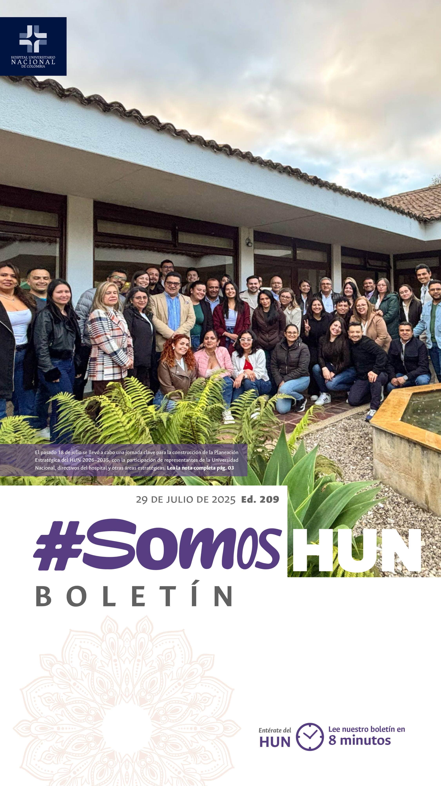
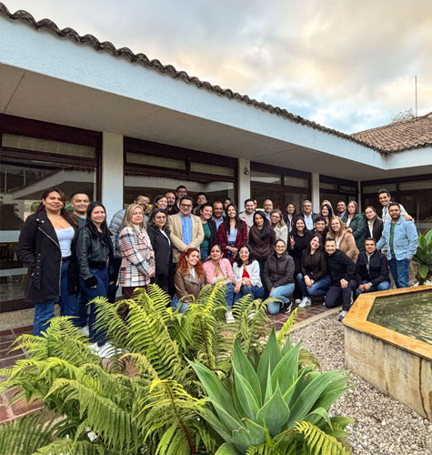
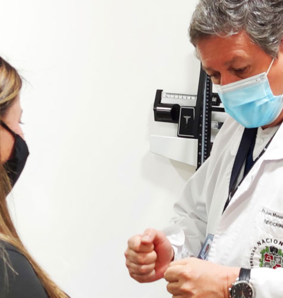
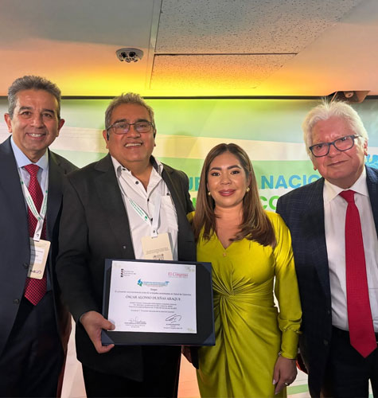
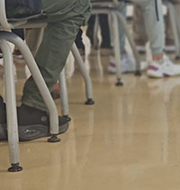

Ver todos los boletines
Dirección general presentó el Diagnóstico Estratégico con miras a la visión 2035
El pasado 18 de julio se llevó a cabo una jornada clave para la construcción de la Planeación Estratégica del HUN 2026–2035, con la participación de representantes de la Universidad Nacional, directivos del hospital y otras áreas estratégicas.Leer más

Endocrinología hoy en Colombia: una mirada desde los especialistas del HUN
La endocrinología, tradicionalmente asociada al tratamiento de enfermedades como la diabetes o los trastornos tiroideos, ha tomado en los últimos años un papel central en la transformación del sistema de salud colombiano. Así lo afirman tres endocrinólogos del Hospital Universitario Nacional de Colombia (HUN), y docentes de la Facultad de Medicina Universidad Nacional de Colombia quienes, desde su experiencia clínica, docente e investigativa, comparten una visión de presente y futuro sobre esta especialidad fundamental.Leer más
Lanzamiento ECBE mieloma múltiple
El mieloma múltiple (MM) es una neoplasia maligna de las células plasmáticas que se acumulan en la médula ósea que puede provocar insuficiencia renal, hipercalcemia, destrucción ósea y anemia.Leer más

INS y la Revista el Congreso reconocen al HUN por la Acreditación en Salud
El Instituto Nacional de Salud, @insaludcolombia ,ICONTEC y la Revista el Congreso @revista_elcongreso entregaron al HUN y las otras 61 Instituciones acreditadas en el país un reconocimiento por demostrar e incentivar el cumplimiento de los altos estándares de calidad en Colombia.Leer más

"En sus zapatos: donde comienza la verdadera compasión"
Ponerse en los zapatos del otro, significa asumir una actitud empática y humana que reconoce al paciente como una persona integral, con emociones, miedos, necesidades y derechos. No se trata solo de brindar atención clínica, sino de entender lo que vive y siente quien está en una situación de vulnerabilidad.
Leer más